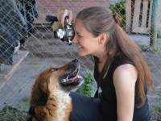
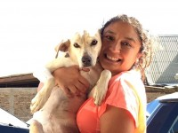
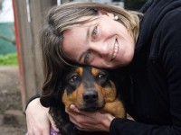
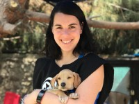
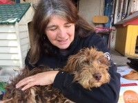
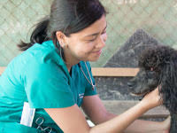

¿ Quienes Somos ?
Nuestra Historia
Mascotas en Adopcion Chile es una corporación encargada del rescate de animales de compañía que se encuentran en condición de abandono y con condiciones sanitarias deficientes. La corporación nace como la consolidación de un equipo formado por personas que venían trabajando desde hace tiempo en el rescate, principalmente de perros, y en la generación de políticas educativas de tenencia responsable. El año 2014, a causa del deterioro y abandono progresivo del Refugio Esperanza, este grupo de personas concurrió al llamado para salvar al Refugio. La necesidad de consolidar la ayuda, asegurar los recursos y ampliar los objetivos a la adopción, la mejora de la calidad de vida y la promoción de la educación en tenencia responsable, llevó a los integrantes a embarcarse en la misión de obtener la personalidad jurídica, generar una estructura, elegir a los representantes y funcionar, finalmente, como una corporación. Hoy la Corporación Mascotas en Adopcion Chile se posiciona como una institución que busca instalar en el debate nacional el tema de protección animal y tenencia responsable.
Nuestra Mision
Somos una corporación destinada a trabajar por el bienestar animal y promover el respeto y la tenencia responsable de animales de compañía, especialmente en condición de abandono, rescatando y mejorando las condiciones sanitarias, educando y generando conciencia en la población. Esto lo hacemos para mejorar la calidad de vida, las condiciones de salud pública y contribuir a una sociedad más empática, solidaria y consciente de la interacción de los animales con el ser humano.
Colaboradores
1° Directora
Kathy Cordez
2° Directora
Camila Robles
3° Directora
Esthefania Campos
Presidenta
Valeria Vidal
Vicepresidenta
Constanza Ruminot
Veterinaria
Barbara Altamirano
